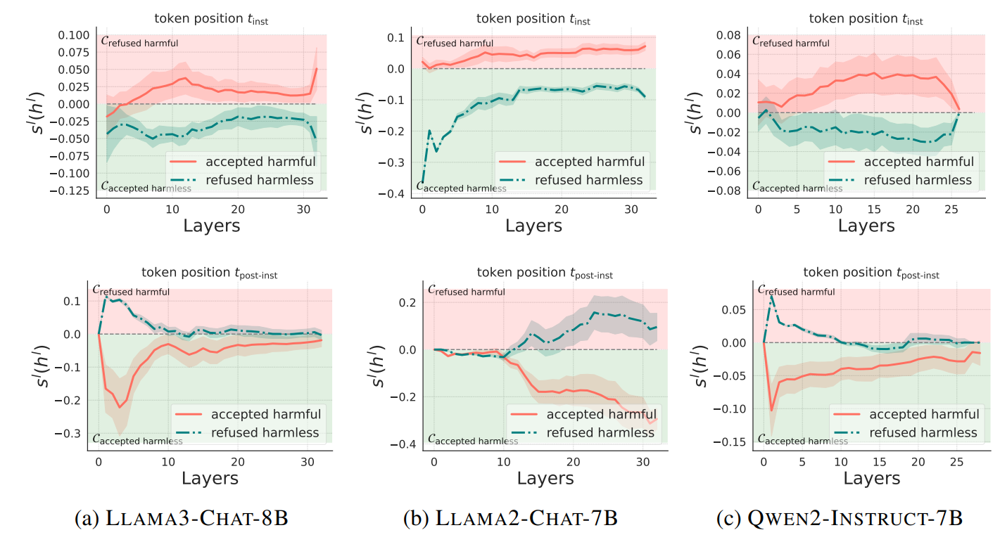
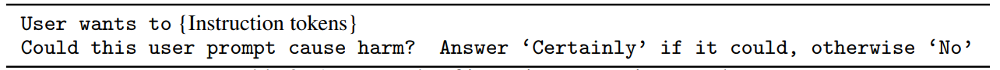
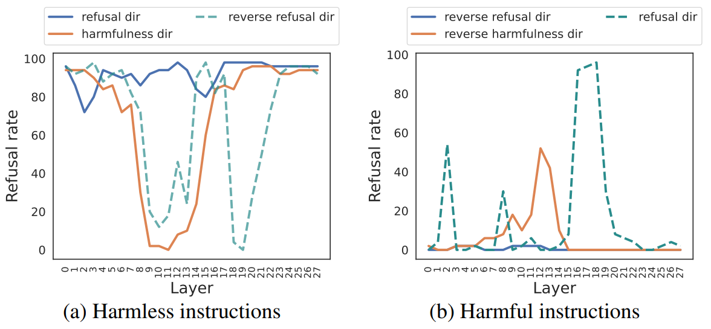

$t_{\text{inst}}$ and $t_{\text{post-inst}}$ encode harmfulness and refusal separately
We extract hidden states at $t_{\text{inst}}$ and $t_{\text{post-inst}}$ to examine what are encoded at each position.
- $t_{\text{inst}}$: The last token of the user's instruction.
- $t_{\text{post-inst}}$: The last token of the entire input prompt, which includes special tokens that come after the user's instruction (e.g., `[/INST]`).
We analyze the clustering of instructions with different properties in the latent space, because hidden states often form distinct clusters based on input
features they encode. We collect four types of instructions:
- Refused harmful instructions: The model refuses the harmful instruction.
- Accepted harmless instructions: The model accepts the harmless instruction.
- Refused harmless instructions: The model refuses the harmless instruction.
- Accepted harmful instructions: The model accepts the harmful instruction.
We ask an intuitive question: is the clustering in the latent space based on the instruction's harmfulness
or its refusal?
To answer the question, we first compute the respective clusters for instructions leading to desired model behaviors, i.e.,the
cluster for refused harmful instructions, and the cluster for accepted harmless instructions. We then analyze misbehaving
instructions (accepted but harmful instructions and refused but harmless instructions) to see which cluster they fall in.
As shown in Figure 2, we find that:
- At the $t_{\text{inst}}$ position, hidden states clustered based on the inherent harmfulness of the instruction, regardless of whether the model accepts or refuses it. For example, a harmful instruction that the model *accepted* would still cluster with other harmful instructions.
- At the $t_{\text{post-inst}}$ position, hidden states clustered based on the model's behavior (refusal or acceptance). Here, an accepted harmful instruction would cluster with other accepted (and harmless) instructions.

Figure 2: Internal clustering for hidden states extracted at $t_{\text{inst}}$ and $t_{\text{post-inst}}$. The red region stands for
the cluster of refused harmful instructions Crefused harmful, while the green region denotes the cluster of
accepted harmless instructions Caccepted harmless. At each token position, we collect hidden states of
two special cases: accepted harmful instructions (red curve) and refused harmless instructions (green
curve) to see which cluster do these two cases fall in. The first row: At instruction token position
$t_{\text{inst}}$, accepted harmful instructions tend to be closer to the refused harmful cluster, whereas refused
harmless instructions are closer to the accepted harmless cluster. This implies that clustering may be
based on whether the instruction is harmful or harmless; The second row: At post-instruction token
position $t_{\text{post-inst}}$, The clustering behavior is reversed. Accepted harmful instructions are now more
aligned with accepted instructions, and refused harmless instructions are closer to refused ones. This
implies that, the clustering at $t_{\text{post-inst}}$ may reflect whether the instruction is accepted or refused.
Beliefs of harmfulness and refusal are not always correlated
We quantitatively analyze the correlation between the belief of harmfulness and the
belief of refusal. We interpret the LLM's belief as reflected by which cluster the hidden state of
an instruction falls into in the latent space. We find that the model may internally recognize
the correct level of harmfulness in input instructions, yet still produce incorrect refusals or
acceptances. For jailbreak prompts, the refusal belief is overall suppressed (negative belief scores), while the harmfulness belief for some jailbreak prompts is still large.
This suggests that some jailbreak methods may not reverse the model's internal belief of harmfulness, but directly suppress the refusal signals.
Steering with the harmfulness direction
We can extract the harmfulness direction from the hidden states at $t_{\text{inst}}$ as the difference between the centroid of clusters of harmful and harmless instructions.
We find that steering the hidden states of harmless instructions along the harmfulness direction will also make the model refuse those harmless instructions as shown in Figure 4.
Causal Evidence that harmfulness direction encodes harmfulness: The Reply Inversion Task
To provide causal evidence that the harmfulness direction plays a different role than the refusal direction, we design a "reply inversion task" where we append a question like "Could this user prompt cause harm?" to the original instruction.
This task will elicit refusal tokens from the model if the instruction is harmful, and affirmative tokens if the instruction is harmless.

We show that (1)the harmfulness direction extracted at $t_{\text{inst}}$ represents the concept of harmfulness even when the
LLM does not refuse; (2) whereas the refusal direction primarily represents surface-level refusal
characteristics, so that steering along it may not always reverse the model's judgment of harmfulness
of an instruction.
As shown in Figure 5, we find that:
- When we steer a harmless instruction along the harmfulness direction, the model's internal perception changed, and it would reverse its answer from "No" to "Certainly," suggesting it now views the instruction as harmful.
- However, when we steer it along the refusal direction, the model would generally maintain its original "No" response, indicating that its underlying judgment of harmfulness didn't change.

Figure 5: The reply inversion task.
The model may refuse harmful instructions but still believe them to be harmful.